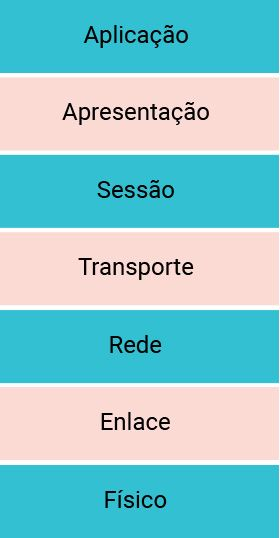

O primeiro modelo de camadas
Modelo de referência OSI
Confira agora os principais pontos sobre o modelo OSI.
No final dos anos 1970, a Organização Internacional para Padronização (International Organization for Standardization – ISO) propôs que as redes de computadores fossem organizadas em camadas, sendo cada camada responsável por realizar determinado serviço.
Esse esforço fez surgir um modelo de camadas que ficou conhecido como modelo RM-OSI (Reference Model Open Systems Interconnection), ou simplesmente modelo OSI, utilizado até hoje e composto por sete camadas, numeradas de cima para baixo: aplicação, apresentação, sessão, transporte, rede, enlace e física, conforme mostrado na imagem a seguir. Confira!

Importante ressaltar que o modelo OSI é utilizado como uma referência para o estudo e funcionamento das redes, entretanto, não é utilizado em si, principalmente porque ele não definiu protocolos, mas sim os serviços que cada camada oferece. Vamos detalhar essas camadas?
Aplicação
Nesta camada, residem as aplicações de rede que implementam os serviços de redes, como para transferir arquivos, enviar mensagens, entre outros. Um protocolo de camada de aplicação é executado nos sistemas finais, permitindo que as aplicações executadas nesses sistemas finais possam trocar informações por meio de mensagens.
Apresentação
Nesta camada, provê serviços que permitam às aplicações de comunicação interpretarem o significado dos dados trocados, ou seja, ela é responsável por garantir que sistemas diferentes possam trocar informações, como faz um tradutor. Entre esses serviços estão a compressão, criptografia e a codificação de dados.
Sessão
Nesta camada, há a delimitação e sincronização da troca de dados. É a camada que seria responsável, por exemplo, por permitir que, se você estivesse realizando um download de um arquivo e a conexão caísse, você retomasse a transferência a partir do último ponto de sincronização.
Transporte
Nesta camada, são carregadas mensagens da camada de aplicação entre os sistemas finais, garantindo que todos dados sejam trocados de forma correta, ou seja, sem perda, em ordem, sem sobrecarregar a rede e as máquinas. Um pacote da camada de transporte é denominado segmento.
Rede
Nesta camada, há a responsabilidade por determinar o caminho de um hospedeiro para outro. Para que esse serviço seja possível, os endereços lógicos são definidos na camada de rede, que identificam unicamente uma máquina na rede, e a função de roteamento. Os pacotes da camada de rede são conhecidos como datagramas.
Enlace
Nesta camada, leva-se um pacote, denominado quadro, de um nó ao nó seguinte, no caminho entre origem e destino. Em cada nó, a camada de rede passa o datagrama para a camada de enlace, que fica responsável por encaminhar o pacote de dados até o próximo nó, de forma confiável, ou seja, sem erros.
Físico
Nesta camada, os bits individuais que estão dentro do quadro de um nó para o seguinte são movimentados, transformando-os em algum tipo de sinal adequado a ser transmitido pelo meio de transmissão utilizado, por exemplo, fios de cobre ou fibra ótica.